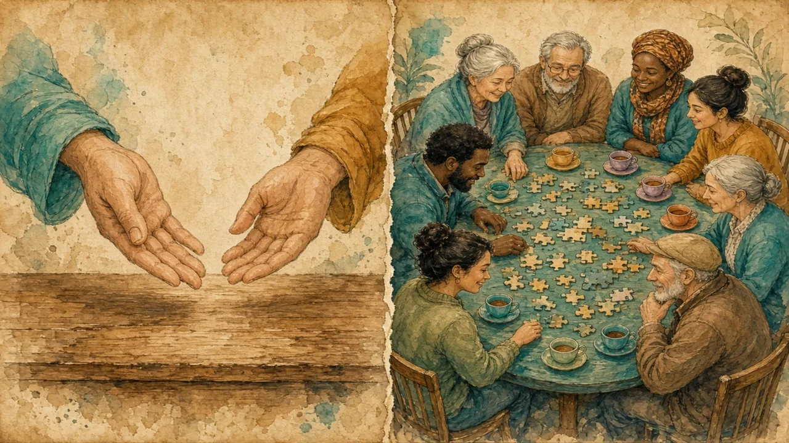

Some countries argue between two big parties. Others need many parties to sit around one table.
Parties and coalitions · Lesson 3 of 8
🌍 Politics map · ← Politics Around the World · 🌱 Easier version (A2) · ← Prime Minister or President? · Should Everyone Vote on Everything? →

Each new word is hidden in a sentence. Read it aloud and say what you think the bold word means from the rest of the sentence — then reveal it and see how close you were.
Read each part. After it, there's a quick comprehension check (try the questions from memory first), then one thing to discuss.
In the United States and the United Kingdom, most representatives are elected in single-member areas, and the candidate with the most votes wins. This is often called first past the post. It tends to produce two large parties, because votes for small parties can feel wasted. The UK does have other parties, such as the Liberal Democrats and the Scottish National Party, but the USA has been dominated by just two parties for most of its history.
1. What happens in a single-member area?
2. Why does this system tend to produce two big parties?
1. The candidate with the most votes wins the seat.
2. Because votes for small parties can feel wasted.
Germany and the Netherlands use forms of proportional representation, where a party's share of the seats is close to its share of the votes. In Germany a party generally needs five percent of the vote to enter parliament. As a result, several parties win seats, and almost no party wins a majority alone. Governments are therefore coalitions, and the parties must agree a programme before they can govern.
1. What does proportional representation mean?
2. Why are coalitions normal in Germany?
1. A party's share of seats is close to its share of the votes.
2. Because several parties win seats and almost none wins a majority alone.
Coalition talks can take a long time. After the 2021 election in the Netherlands, forming a government took nearly 300 days, the longest on record in that country. Supporters say that this forces parties to compromise and represent more voters. Critics say that it leaves voters unsure who made which decision, and that deals are made behind closed doors.
1. How long did the Dutch talks take in 2021?
2. What do critics of coalitions say?
1. Nearly 300 days.
2. That voters are unsure who decided what, and that deals are made in private.
A stereotype and the reality rarely match. This lesson's grammar gives you the structure to describe the difference.
Complete each sentence about Two Parties or Many?.
1. If no party (win) a majority, a coalition is formed.
2. If a country (use) proportional representation, smaller parties usually win seats.
3. If the Dutch parties disagreed, talks (take) longer.
1. wins
2. uses
3. would take
1. If the USA had a proportional system, third parties (win) more seats.
2. If the talks had failed, there (be) a new election.
3. Unless voters (change) their habits, two parties will keep dominating.
1. would win
2. would have been
3. change
Hold on to this — you'll need it in the Speak tab.
The idea that elections are always between two parties comes from the experience of the USA and the UK, and from the English language media that report them most. Most democracies in Europe use proportional systems. Neither is automatically better: two-party systems give clear winners and simple choices, while many-party systems give a wider range of voices but more bargaining after the vote.
This is the heart of the lesson — do all of it out loud. The timer is there to keep you going: fill the time with detail rather than escaping it.
Explain the difference between a two-party system and a coalition system, as if to a friend who thinks all elections work like a two-team match. Move through the arc: winner takes all → proportional seats → coalitions → the cost of waiting.
Use today's grammar at least three times, and work in at least five key words (coalition, majority, proportional, constituency, ballot, seat, compromise, threshold).
“A government should be formed by one party that won, not by a deal.” Discuss.
Tell a story from your own world — work, family, the news — that connects to this topic. Stuck for an idea? Pick one of these and run with it:
🌍 Politics map · ← Politics Around the World · 🌱 Easier version (A2) · ← Prime Minister or President? · Should Everyone Vote on Everything? →